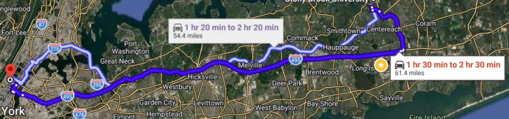
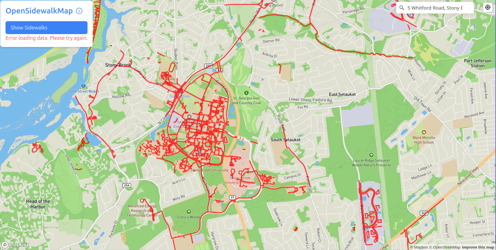
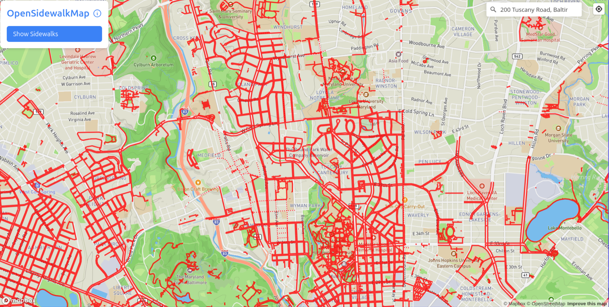
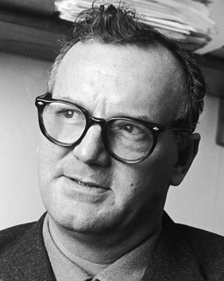
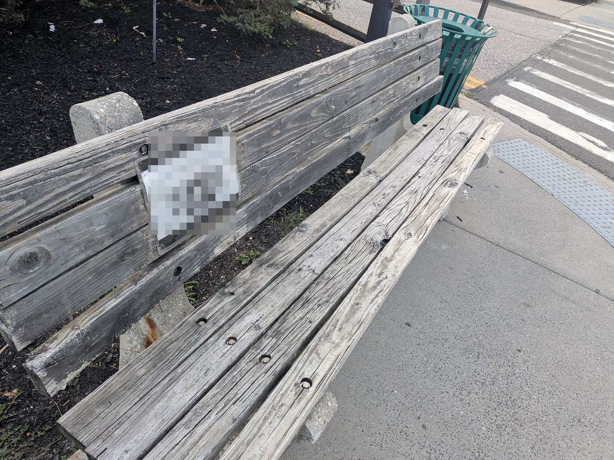
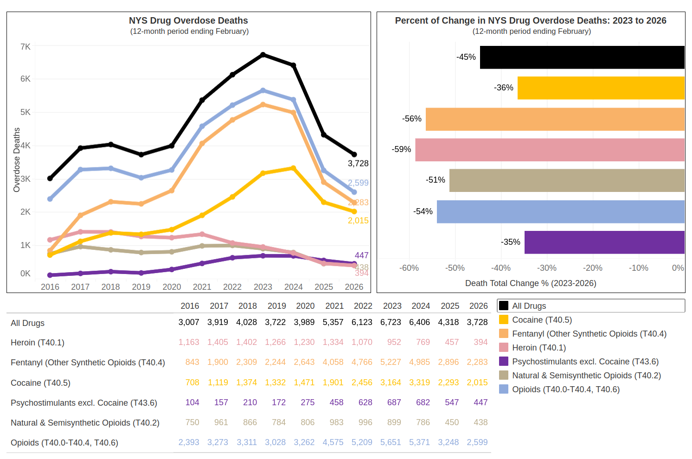
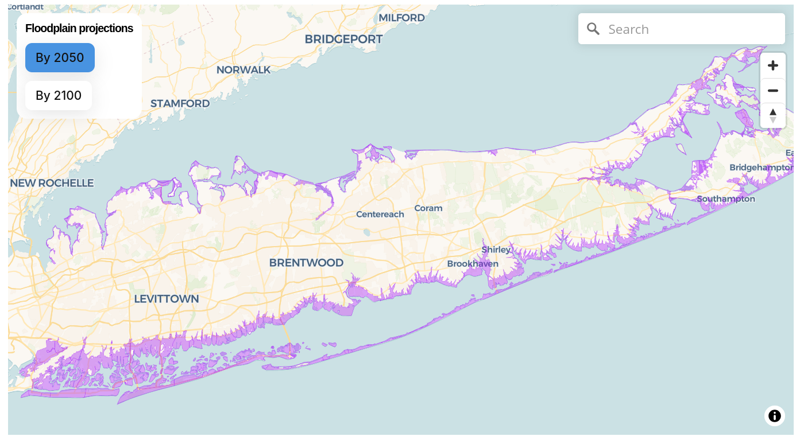

In 2023, the New York Metropolitan Area had the worst traffic in the United States, and the 20th worst in the entire world. It took New York drivers an average of almost 24 minutes to travel 6 miles—about four minutes faster than the worst city in continental North America (Toronto) but about three minutes slower than Washington, D.C., and about four slower than San Francisco.
One way to demonstrate how dramatic these differences can be is to compare how long it takes to get from two pairs of equidistant places in different parts of the United States. From Stony Brook University to the middle of Manhattan, as you can see from the below screencap of Google Maps, is a little over 60 miles. If we ask Google Maps to predict our commute by saying we’ll leave SBU at 8 AM on a Friday, and ask it to take the most direct highway route possible, we can see that the estimate is somewhere between 90 and 150 minutes.

The Commute Time to Manhattan Predicted by Google Maps, 8 AM Departure, August 14th, 2026.
By contrast, consider another part of the country that is nearly the same distance (about 64 miles): between Topeka, KS and Kansas City.1 As you can see below, this journey usually takes a little more than half the time. Why?
1 This also follows the interstate, and departs at 8 AM on a Summer Friday.
The Commute from Topeka to Kansas City Predicted by Google Maps, 8 AM Departure, August 14th, 2026.
The next time you are sitting on Nicholls Road or 347, behind a heating-oil delivery truck but before you get to a lane-narrowing, and after someone just cut you off making an unprotected left just as the light turned green the intersection before,2 you can ask yourself this question.
2 I hate the Long-Island convention of turning left in front of traffic the moment a light turns green. This is illegal, and is called an “unprotected left.” The New York State Drivers Manual Section 4266 (Right of Way) states: “If drivers approaching from opposite directions reach an intersection at about the same time, a driver that turns left must yield to traffic that moves straight or turns right…For any left turn, the law requires you to yield to any traffic headed toward you that is close enough to be a hazard.” End of rant.
3 The social domain is any set of actions, interactions, beliefs, or material structures that draw from shared meanings or require coordinating people.
There are two basic kinds of answer. On the one hand, to the question “why am I stuck in traffic?”, you could simply answer: “because these jerks won’t get off the road!” But on the other hand, you could look beyond the personal to ask, in turn, why do all those other jerks people also feel like they have to be on the road at that same time? It is possible, in other words, to expand our perspective from purely personal answers to questions of why things happen in the world to those that involve social3 causes and forces.
So, why are you sitting in traffic? On Long Island, there are lots of reasons!
First, Long Island has few, infrequent, and expensive public transit options, especially within the Island. Of the 15 counties assessed by the Center for Neighborhood Technology, Suffolk County has a 3.8 “overall transit score” compared to a 9.9 for New York City (on a 10-point scale.)
Beyond public transit, second, your options for non-car transportation are limited. For instance, it is dangerous to walk; Long Island also has terrible sidewalk coordination, as demonstrated by this OpenSidewalkMap visualization of the area right around campus.

To get a sense of what a stark contrast this is, compare it to a sidewalk map for an equally-suburban-ish location next to a University in Baltimore.

4 Indeed, the first-even Levittown, which became a symbol of the suburbs, is on Long Island, albeit in Nassau County.
We can go deeper: to explain why Long Island ended up with poor public transit and heavily dependent on cars, we have to probe its social history. Long Island is composed of three large political entities (the boroughs of NYC, Brooklyn and Queens, which themselves were independent cities until they were annexed by New York City in 1898), Nassau County, and Suffolk County (which covers roughly the Eastern half of Long Island). As you can see from the figure, very few people lived in Suffolk until just after World War II, when the population exploded from about 250,000 in 1950 to about 1.25 million in 1975. As we will discuss later in the course, like the vast bulk of this population was part of the broader suburban expansion taking place throughout the United States,4 this wave of expansion carried with it an image of what suburban life was supposed to be like (Jackson 2006). The image was a family living in a detached home, with a yard (and on Long Island, a pool in that yard!), and at least one car. Accordingly, to the extend that planning was done during this wave of suburban expansion, it focused on how to accommodate cars, low-density housing, and organized amenities (shopping, entertainment, and so on) for car, as opposed to public-transit access (Silverman and Schneider 1991).
Here is an example of suburban amenities planning on Long Island, from Roosevel Field shopping mall in 1968: Image via Silverman and Schneider (1991).
Source: US Census, via Wikipedia. 2025 population is estimated.
Many of the great cathedrals of this kind of suburbanization and its planning—particularly, giant malls you would linger at all day—are dead or dying, but people still have to get to work. In fact, the American Community Survey, a national, representative sample of a variety of behaviors conducted by the United States’ census bureau, summarizes the situation well.
Type of Commutes Undertaken in Suffolk County, NY, ACS 2024
Type of Transit
Number
(Rounded) Percentage
Drove Alone
555,773
72%
Carpooled
65,253
8%
Public Transit
39,214
5%
Worked From Home
82,031
11%
Total
773,512
~100%
So, to summarize: why are you stuck in traffic? Because there are lots of cars. Why are there lots of cars? Because there’s not much public transit. Why isn’t there more public transit? Because Long Island’s development was oriented around cars. What has made traffic worse over time? Population growth and single-car commutes to work.
blazow! You’ve just had your first dose of sociology!
The Sociological Imagination
The above example about traffic, and especially the moment of moving from a purely personal understanding of the causes of a given situation to its social components, is what we call the sociological imagination.5 Partly because of the intellectual structure of the discipline, sociologists tend to restate basic concepts repeatedly and in different vocabularies, and so there have been at least two major statements describing the sociological imagination.
5 The sociological imagination is the capacity to analyze phenomena in terms of the social forces that shape and constitute them.
One Phrasing: The Soul of Society
The first statement was made by W.E.B. Du Bois (1868-1963),[^4] who, in addition to being the first black man to earn a Ph.D. from Harvard, spent his notable career writing works exploring the legacies of slavery and race in the United States. He also wrote The Souls of Black Folk, which expressed his vision of the sociological imagination.
W.E.B. Du Bois in 1907, rocking the absolute pants off that goatee. Source.
To get a sense of the point Du Bois wants to make about the sociological imagination in The Souls of Black Folk, think back to when you were a child. Chances are that you will remember a time when other children or adults made you feel different. Maybe you were picked first or last for something; maybe people thought you were especially funny, serious, pretty, or ugly; maybe children wanted you to play certain kinds of games and not others; maybe your parents warned you about playing with other kinds of children; maybe they expected you to start working earlier or later than others.
Depending on how good your memory is, you might also remember the reasons that other people gave for treating you like they did. The reasons could have been idiosyncratic–you’re too tall or short, or people loved or hated the haircut you chose–but if you heard the same reasons over and over, and across many different people, the chances are that they represented social categories6 which formed the basis for how people perceived you.
6 A social category is a shared basis for grouping people together or dividing them apart. Social categories include gender, race, ethnicity, national origin, ability, appearance, and class.
Du Bois recognized this dynamic too, and wrote about it in The Souls of Black Folk(2007), opening the book with his own painful childhood memory:
I was a little thing, away up in the hills of New England…In a wee wooden schoolhouse, something put it into the boys’ and girls’ heads to buy gorgeous visiting-cards––ten cents a package––and exchange. The exchange was merry, till one girl, a tall newcomer, refused my card,––refused it peremptorily, with a glance. Then it dawned upon me with a certain suddenness that I was different from the others; or like, mayhap, in heart and life and longing, but shut out from their world by a vast veil. I had thereafter no desire to tear down that veil, to creep through; I held all beyond it in common contempt, and lived above it in a region of blue sky and great wandering shadows. (Du Bois 2007:8.)
Du Bois lyrically elaborates on the effect of being seen through one’s social categories:
…the Negro is a sort of seventh son, born with a veil, and gifted with second-sight in this American world,—a world which yields him no true self-consciousness, but only lets him see himself through the develation of the other world. It is a peculiar sensation, this double-consciousness, this sense of always looking at one’s self through the eyes of others, of measuring one’s soul by the tape of a world that looks on in amused contempt and pity. (Du Bois 2007:8.)
If we generalize beyond Du Bois’ specific concern with the black experience of slavery and its bitter aftermath in the united states, we can see two ideas locked in a close orbit in this passage. The first is the melancholy observation that social categories impose expectations on individuals—to the extent that you are seen as black or white or asian or biracial, and so on, others will expect you to speak, act, and behave in characteristic ways, and those expectations come to be a part of how you see yourself.7 But second, by referencing this state as the “gift” of “second-sight,”8 Du Bois also seems to be saying that double-consciousness also (potentially) provides a unique perspective on the world.
7 Du Bois seems to desire “true self-consciousness,” by which he seems to mean the freedom be anyone you want to be.
8 This is the ability to perceive phemonena and events that other people cannot
9Reflexivity is people’s ability to see themselves simultaneously in terms of their own self-perception, but also in terms of the social categories through which others might perceive them.
These two ideas—of how one perceives oneself in terms of other’s perception and the unique perspective this affords—together form a foundational aspect of the sociological imagination. And while this aspect is labeled in different ways in different sociological traditions, one of the most common today is reflexivity.9 The rest of Souls of Black Folk implies that Du Bois thought only certain people had reflexivity by virtue of their social positions, but it is also a capacity that we attempt to cultivate in everyone through the sociological imagination.
Another Phrasing: The Sociological Imagination
Like Du Bois, C Wright Mills produced a true heap of writing over his (shorter: 1916-1962) life time which, also like Du Bois, spanned public-facing work and much technical social science. But her is perhaps best-known today for a short book he published in 1959, called The Sociological Imagination(1959). The whole thing is worth a read, but in the first chapter (“The Promise”), Mills outlines another view of what the sociological imagination is.

C. Wright Mills, wondering what that thing is next to the camera. Source.
Mills begins by recognizing that, in (then-)contemporary society, people feel “trapped” in their lives. As we writes, this is because of
seemingly impersonal changes in the very structure of continent-wide societies. […]10 Neither the life of an individual nor the history of a society can be understood without understanding both. Yet men do not usually define the troubles they endure in terms of historical change and institutional contradiction. The well-being they enjoy, they do not usually impute to the big ups and downs of the societies in which they live. Seldom aware of the intricate connection between the patterns of their own lives and the course of world history, ordinary men11 do not usually know what this connection means for the kinds of men they are becoming and for the kinds of history-making in whicht hey might take part. They do not possess the quality of mind essential to grasp the interplay of man and society, of bigraphy and history, of self and world. They cannot cope witht heir personal troubles in such ways as to control the structural transformations that usually lie behind them (Mills 1959:3–4).
10 For those who don’t know, these elipses (…) mean that I’m skipping some detail in the original text I am quoting.
11 Notice the sexist language Mills uses: he actually says “men.” Until the last 30 years or so, “man” was an impersonal noun in English, used similarly to how we use the word “people” today, or, more esoertically, “one.” (As in: “when one tries to understand how to use a word in a new way, one usually does so best by seeing an example of that new use.”)
There is obviously some flowery language happening in this passage—the line about “the interplay of man and society, of biography and history, of self and world” is particularly famous—but the central theme of the passage is that there are social forces12 acting on the fate of our lives. To put it a little differently: yes, there are things that happen individually to you and no one else in your life. You are born to a particular set of parents,13 you live in a given place,14 fall in love,15 fall back out of love,16 grow up,17 get educated,18 and (probably) work at one kind of job or another.19 Think of all the different combinations of social categories and events that you occupy, and you find that there is a pathway through them so unusual that we think of it as unique; you are an individual.
12 A social force is any action taken by a person or group, intentional or unintentional, that brings about a state of affairs in the world, and which an individual perceives as external to themselves.
13 Me: Modena and Gary Wilson.
14 Me: Stony Brook, NY.
15 Me: bro, i am lowkey obsessed!
16 Me: Sniffles…i’m….fine…
17 Me: should be done in a year or two.
18 Me: Baltimore City Public School #233 to Friends School of Baltimore (Go Quakers!) to The University of Maryland, College Park (Go Terps!) to the University of California, Berkeley (Go Bears!).
19 Me: a postdoctoral fellowship at Yale University (Go Bulldogs!) to a faculty position at Stony Brook (Go Seawolves!).
And as an individual, the specific choices you make are under your control, and in modern societies we hold responsibility for those choices in a variety of ways, but the key to understanding social forces is that they create the set of choices we have in the first place. For instance, the schools I attended are partly a story of what my parents could afford; what they could afford is partly a matter of their occupations; their occupations are partly related to their own educational background and social class; their backgrounds are in turn intertwined with how social forces shaped their own lives and opportunities. Mills is calling our attention to this duality: our choices are our own, but we are presented with different choices both over time and across social and physical space.
In the rest of “The Promise,” Mills unfolds our experience of this duality. Often, he thinks, we experience the effects of social forces as troubles—that is, we tend to stay focused on ourselves and neglect the work of social forces.20 Think of getting dumped, for example. Most of us, when it first happens, experience this as intensely personal. Even if we’re told “it’s not you, its me,” it still feels like a pain that no one else has ever felt like you’re feeling. But there’s another way to see getting dumped too, particularly when it (quite literally) isn’t something that’s happening just to you, but also to many other people who are like you:21 the individual pain you are feeling might have a strong connection to the work of one or more social forces. When we see a problem this way, Mills thinks we should call it an issue.22
20Troubles are the effects of social forces, limited to the perception of psychological effects like happiness, joy, sadness, and anxiety.
21 This means that they share many of the same aspects of their backgrounds, like the ones enumerated above.
22Issues are the effects of social forces, when considered at the level of social categories and groups of people.
23Cherished values are deeply-held, meaningful desires, goals, or states of affairs about which people may or may not be aware, and which, depending on circumstance, they may or may not perceive to be under threat.
24 As we will see later in the course, “we” do not universally cherish most things in modern society. More technically, a value is socially cherished if you are at least aware of “how it should be” and what expectations are in a given situation, whether or not you feel personally committed or motivated by them.
To continue playing with the example of getting dumped: why should that be painful in the first place? Well, Mills thinks that this is partly because of another effect of social categories and society. Just by virtue of living in society, over time we are exposed to, and sometimes come to incorporate cherished values23 with varying levels of awareness. Cherished values can be seen as commitments people hold about what outcome “should” result from a given set of behaviors. So, breakups feel painful partly because we24 cherish the value of being in romantic love: as a society, we uphold and venerate the idea that to be “in a relationship” is a matter of making a “soul-mate” connection with someone else, and getting dumped can make you feel like you were mistaken about what was going on. For some of us and concerning some values, we may be able to easily articulate and verbalize what the value is that we cherish in a given situation; for other people and values, sometimes we may only be able to vaguely sense that something is important without being able to put words to it.
Mills invites us to see that, as social forces reshape society, they can put different cherished values under threat while reinforcing and even creating others. Depending on our ability to actually articulate what those cherished values are, we can thus be in one of four different states:
C. Write Mills’ Typology of Cherished Values in Changing Times
Cherished Values Not Threatened
Cherished Values Threatened
Can Articulate Values
Well-Being
Crisis
Cannot Articulate Values
Indifference
Uneasiness
Think of your own emotions right now. How do you feel? Can you say what really matters to you, and whether you think you can hold on to it or achieve it? The power of the sociological imagination is that it lets you understand yourself, your hopes and dreams, as well as the possibility of realizing them, in terms both of your own live, but also in the context of social forces and social change.
Sociological Imaginations
To make sure we have a grip on the sociological imagination, let’s close with a couple more examples, which I will explore more briefly than the traffic-jam example above.
Opioid Addiction
If you travel to a nearby town, near the center of that town you’ll see a bench. For several years, it had a sports helmet chained to it, but now only has a laminated piece of paper on it, remembering a star athlete who died in his early adulthood.25
25 I am deliberately keeping the specifics vague, since the family never officially announced the cause of the man’s death.

A bench in a nearby town, holding a memorial to someone who died suddenly at a young age. (Source: Nicholas Hoover Wilson.)
Unfortunately, this man was rumored to have died by ingesting what he thought was an opioid like Percocet or Vicodin, but which had been laced with a much more powerful synthetic opioid, fentanyl. Indeed, many people of a certain age have friends or family members who have struggled with opioid addiction, even if they survived. And as anyone who has experienced opioid addiction or been close to someone who has will tell you, it is an engine of troubles, destroying people’s health, costing themselves and their loved ones dearly, and wrecking relationships.
And yet opioid addiction is not just a result of personal troubles; it is also an issue resulting from the interplay of social forces. Opium (the source of the class of drugs called opioids, and a refinement of the flower and seeds of the poppy plant) has been used for hundreds of years to treat pain and a variety of other ailments, and two of its most active ingredients, morphine and codeine, were isolated in the 19th century (Siegel 2026). In the 20th century, chemists also synthesized and refined new, more potent drugs in the same class, including oxycodone in 1916, hydrocodone in 1920, hydromorphone in 1921, and fentanyl in 1959.
Until the late 20th Century, however, opioids were largely confined to employment in hospitals, major pain management directly supervised by medical personnel, and illicit use by recreational, long-term users. This began to change, however, because of the intersection of two major social forces. First, pharmaceutical companies began to aggressively market newly-patented, and newly-powerful, refinements of opioids directly to doctors, promising them as a cure-all for pain management and deliberately downplaying their potential for addiction (Keefe 2022). And second, hospitals began to see outpatient opioid prescription as a way to reduce expensive post-surgical hospital stays, and more generally to manage acute pain in less costly ways (Meier 2023). Predictably, this led to a huge spike in outpatient opioid prescriptions, such that
in 2015, at 640 MME26 per capita, [the opioid precscription rate] remains approximately three times as high as in 1999, when 180 MME per capita were sold in the United States, and nearly four times as high as the amount distributed in Europe in 2015 (Guy et al. 2017:699–700).
26 MME stands for “morphine milligram equivalent,” and is a standard measure for the potency of opioids.
Equally predictably, given the known addictive properties of opioids, many people did become addicted to them, and simply switched to illicit sources when doctors began restricting prescriptions in the middle of the 2010s. One such illicit source was “Illicitly Manufactured Fentanyl,” or IMF.
Mercifully, overdose deaths have actually decreased significantly since about 2020. This is attributed to easy access to naloxone, an opioid antagonist, and it has been suggested that regulatory changes in China and other countries may have effectively decreased the supply of IMF (Vangelov et al. 2026).

Opioid overdose deaths in New York State, 2016-2026, including percent change from 2023 to 2026 (Source.)
So, to summarize, a death from opioid overdose is always a personal tragedy and a trouble, since addiction and death obviously deeply affect a circle of individuals. But to use the sociological imagination is to ask broader and deeper questions, beginning with: why are powerful painkilling drugs available so easily outside of hospitals in the first place?
Climate Change
Just over two years ago, on August 19th, 2024, Stony Brook village and University received nearly 10 inches of rain overnight in a “1,000-year rain event.”
As you might expect, the storm caused widespread damage, swelling waterways, saturating soil, and overwhelming drains. At SBU itself, the storm flooded many building basements, including the ground floor of Mendelsohn:
Flooding at Stony Brook University in August 2024 (Source.)
And in Stony Brook village itself, the storm overtopped the Mill Pond dam,27 destroying the dam and road, washing out the fresh water pond into Stony Brook harbor, and damaging many homes along the way.
Having your dorm room flooded or having the stream in your backyard nearly wash away your house would each count as terrible troubles, but like any other phenomena, they can be seen through the lens of the sociological imagination as broader issues. To begin with, to say that the storm that precipitated28 these floods are a “1,000-year rain event” is misleading, since that assumes that the probability of a heavy storm is randomly-distributed over 1,000 years. But it is not; in fact, heavy-ran days have been getting more frequent (increasing by about 25% on average) along Long Island Sound since we began measuring carefully in 1940.
And these kinds of rain events become more severe in part because the sea level itself is rising. In fact, over 150 years or so, it has risen by more than a foot.
Using sophisticated models, climatologists estimate that these changes will continue, making the whole state of New York subject to more severe and wetter weather by the end of the century.
And when combined with sea-level rises, this weather is highly likely to put much of the southern coast of Long Island at risk of severe flooding, if not permanently under water.

Climatological Estimates of Flood Risk on Long Island by 2050 (Source.)
Why are sea levels rising and why is it raining more frequently? The world-wide climate is changing, but not evenly; overall the temperature is rising, and a few degrees Centigrade can touch off complex ecological shifts which make some places very hot and dry, while making others (like us) warmer and wetter.29
29 This is one reason that the label used to describe this phenomenon has shifted from “global warming” to “climate change.” It is global warming in the aggregate, not at every single point on the planet. Indeed, because of phenomena like El Niño and shifts in the jet stream, some local places may actually cool during climate change.
And why, finally, is the global temperature rising? There is nearly-universal consensus among scientists studying the issue that the culprit is carbon dioxide, or CO2. CO2 is a byproduct of the energy rich “fossil” fuels we use (like kerosene, gasoline, coal, and oil), and when it is expelled into the atmosphere, it traps solar radiation in the atmosphere (rather than allowing it to vent into space), so the more CO230 is present in the atmosphere, the atmosphere itself acts in the same way that glass does in the roof of a greenhouse–allowing light in but not back out, thus raising temperatures. (This is why we call them “greenhouse gases.”)
30 I am simplifying, of course. There are a variety of gasses that do this. For instance, methane (CH4) is a byproduct of some agricultural and industrial processes and is a much more potent contributor to temperature rise. But its effect is overall much smaller than CO2, at least for now.
Under normal ecological conditions, atmospheric CO2 is exchanged for oxygen by plants, and then sequestered back into the ground as carbon. But as you can see below, we have been dramatically increasing our collective CO2 output. This happened first as a marker of European and American Industrialization in the 20th Century, and then later as countries like China, India, and those in Africa developed their own economies. Beyond this, a common outcome of wealthy economies (at least as they become wealthy) is that they convert forest-land to other uses. By consequence, we are rapidly losing a key organic means to remove CO2 from the atmosphere.
Du Bois, W. E. B. 2007. The Souls of Black Folk. edited by B. H. Edwards. New York: Oxford University Press.
Guy, Gery P., Kun Zhang, Michele K. Bohm, Jan Losby, Brian Lewis, Randall Young, Louise B. Murphy, and Deborah Dowell. 2017. “Vital Signs: Changes in Opioid Prescribing in the United States, 2006–2015.”Morbidity and Mortality Weekly Report 66(26):697–704. doi:10.15585/mmwr.mm6626a4.
Jackson, Kenneth T. 2006. Crabgrass Frontier: The Suburbanization of the United States. 26. print. New York, NY: Oxford Univ. Press.
Keefe, Patrick Radden. 2022. Empire of Pain: The Secret History of the Sackler Dynasty. New York: Anchor Books.
Meier, Barry. 2023. Pain Killer: An Empire of Deceit and the Origin of America’s Opioid Epidemic. New York: Random House.
Siegel, Benjamin Robert. 2026. Markets of Pain: Opium, Capitalism, and the Global History of Painkillers. New York: Oxford University Press.
Silverman, Arnold, and Linda Schneider. 1991. “Suburban Localism and Long Island’s Regional Crisis.”Built Environment 17(3/4):191–204.
Vangelov, Kasey, Keith Humphreys, Jonathan P. Caulkins, Harold Pollack, Bryce Pardo, and Peter Reuter. 2026. “Did the Illicit Fentanyl Trade Experience a Supply Shock?”Science 391(6781):134–36. doi:10.1126/science.aea6130.

.jpg){kind=link}